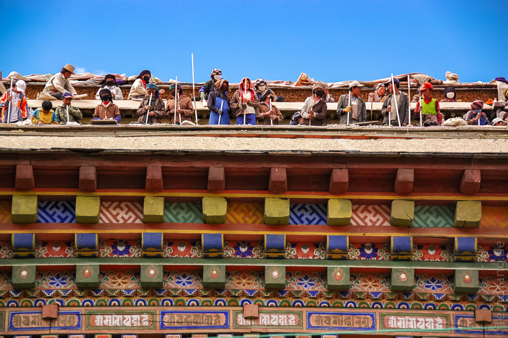
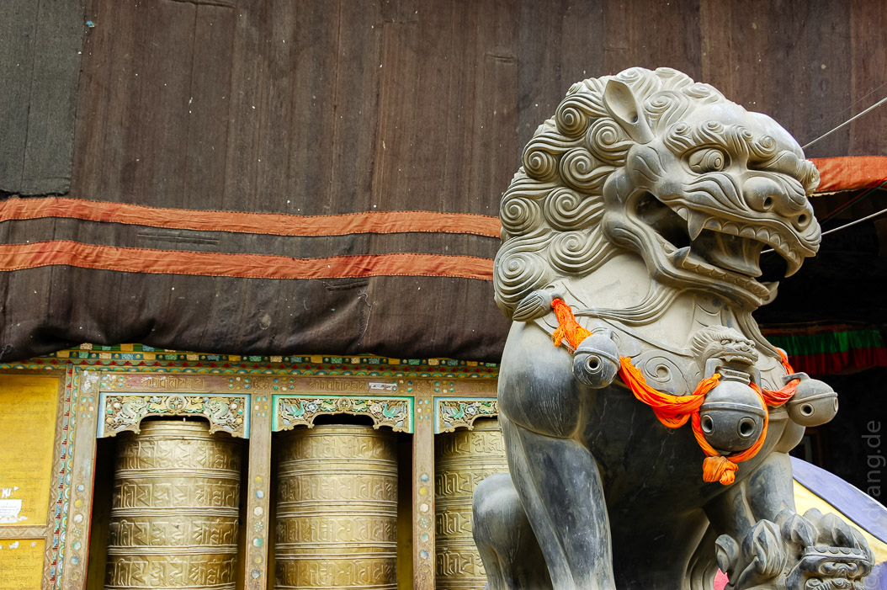
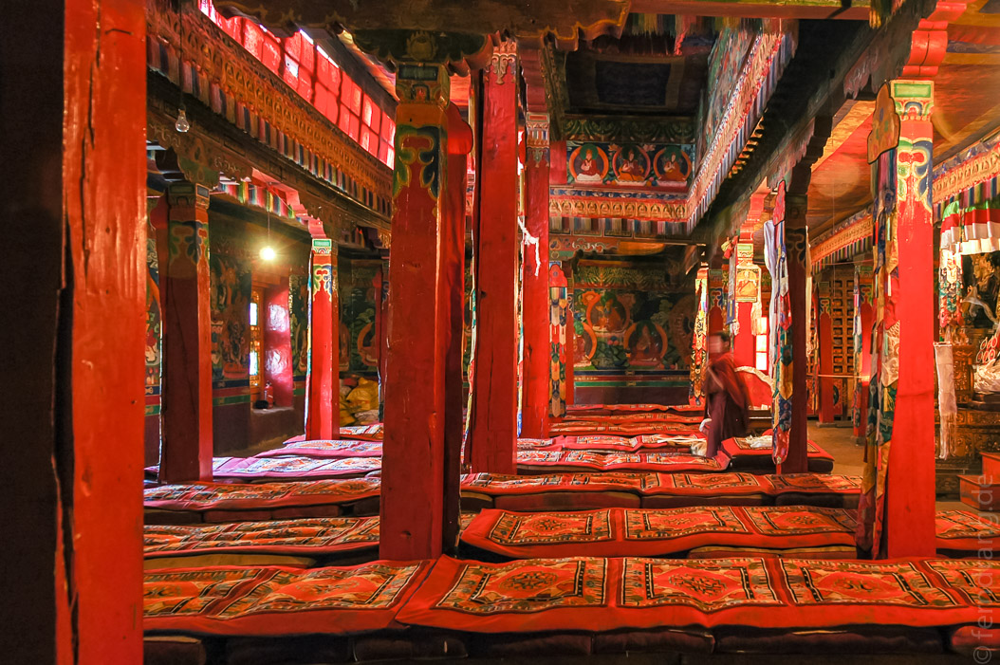
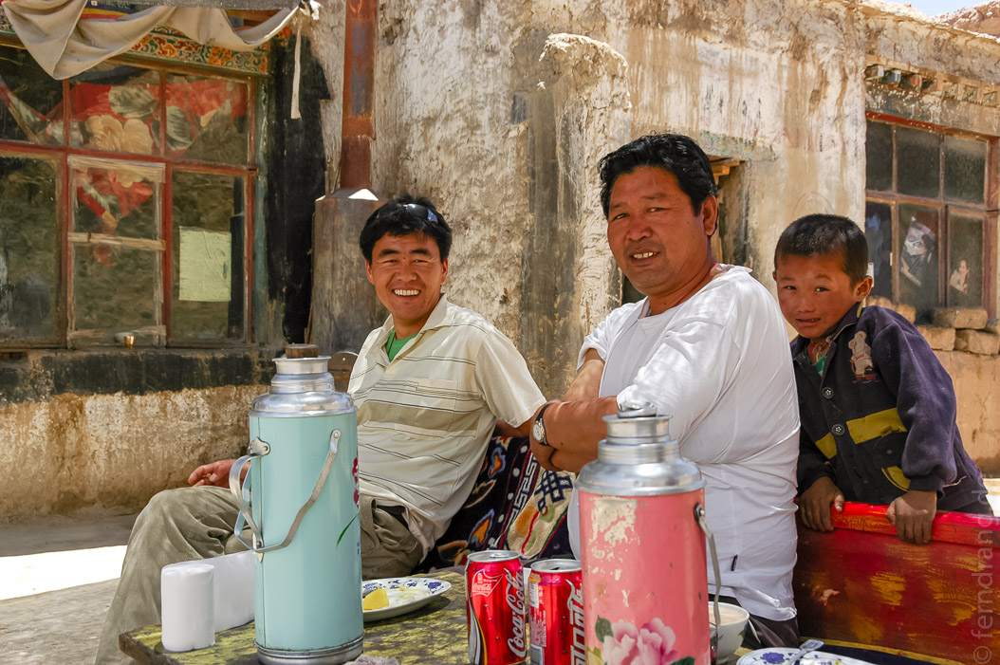
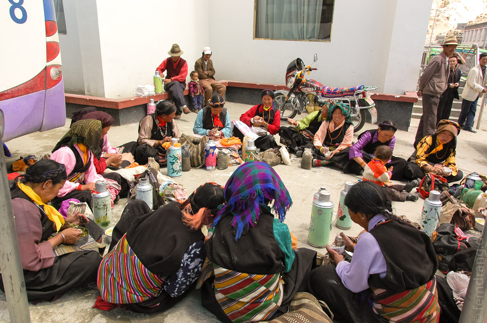

Auf dem Rückweg von Shegar nach Shigatse haben wir einen Abstecher nach Sakya gemacht. Die Stadt ist der Stammsitz der Sakya-Sekte, die eine der buddhistischen Schulen Tibets ist. Das Kloster hat eine sehr lange Geschichte, die wir auf keinen Fall aus dem Kopf wiedergeben können. Aber rein optisch unterscheidet sich das Kloster und der ganze Ort vom Rest Tibets, weil die Häuser hier nicht weiß getüncht sind, sondern aschgrau mit roten und weißen Streifen. Man wollte sich offenbar deutlich abheben.
Das Kloster ähnelt größtenteils einer Baustelle, weil umfangreiche Renovierungsarbeiten im Gange sind. Bei der Besichtigung hatten wir das Glück, die Gebetshalle in Aktion zu erleben. Voll von Mönchen, die sich auf den langen, gepolsterten Bänken gegenübersaßen, wurden wir von einem massiven Gemurmel eingehüllt. Eine Trommel gab den Takt, in dem die Mönche ihre Gebete sangen. Einige Mönche haben sich die Zeit aber auch mit Quatschen oder Opferschälchen-Jonglieren vertrieben.
 Weitere Räume enthielten jede Menge Grabmäler vergangener Sakya-Oberhäupter. Insgesamt war das Kloster sehr schlecht beleuchtet, was daran liegen mag, dass es sehr festungsähnlich gebaut ist und meterdicke Wände hat. In einer dieser unbeleuchteten Ecken konnten wir ein Sandmandala in einem Glaskasten sehen. Wir konnten seine Pracht nur erahnen. Auch die Wände waren mit schönen Mandalas bemalt.
Bei einem Zwischenstopp an einer Art vorsintflutlichen Raststätte, haben wir bei von dort lebenden Farmern ein tibetisches Gericht zum Mittagessen bekommen. Wir waren angenehm überrascht, von dem grauenhaften chinesischen Fraß verschont geblieben zu sein. Es gab Reis mit Kartoffeln und Yak-Fleisch in einer scharfen curryartigen Soße. Abends haben wir in Shigatse wieder unseren Inder besucht, der uns schon vor drei Tagen ein china-freies Abendessen bescherte.  